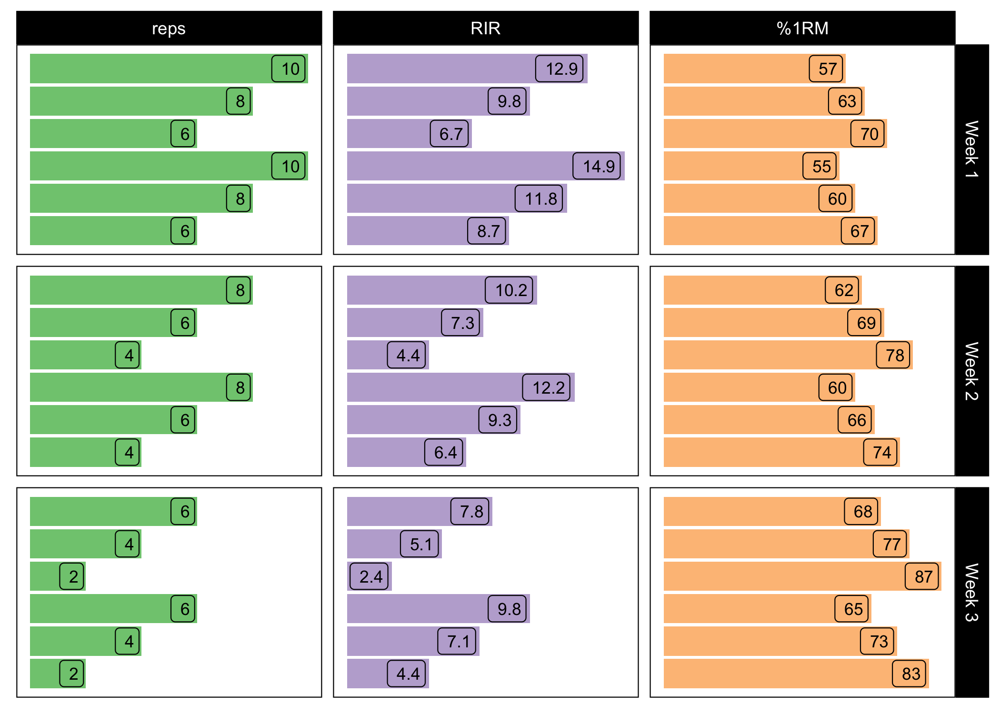
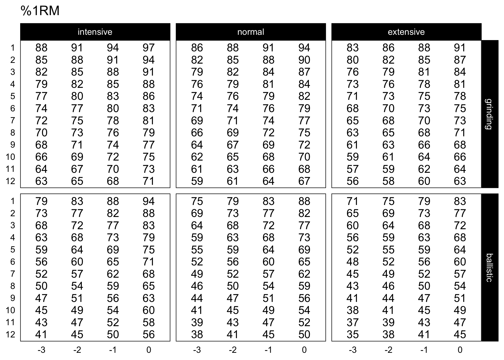

The goal of STM is to provide the readers of the Strength Training Manual a list of functions to help them re-create set and rep schemes as well as to create their own in reproducible and open-source environment.
Installation
You can install the released version (once released) of STM from CRAN with:
install.packages("STM")And the development version from GitHub with:
# install.packages("devtools")
devtools::install_github("mladenjovanovic/STM")Examples
This is a quick example, more are coming….
Progression tables
Strength Training Manual comes with two progression table implemented in progression_RIR_increment() and progression_perc_drop() functions, although there are other variants (and you can easily make your own).
Here is the RIR Increment progression table:
# Load STM package
require(STM)
plot_progression_table(progression_RIR_increment, signif_digits = 2)
And the Perc Drop progression table:
plot_progression_table(progression_perc_drop, signif_digits = 2)
Set and Rep schemes
Strength Training Manual comes with more than 2,000 set and rep schemes. STM package allows re-creation of those schemes, but also creation of custom ones.
Here is an example for the Wave Set and Rep Scheme
# Wave set and rep scheme
scheme <- scheme_wave(
reps = c(10, 8, 6, 10, 8, 6),
# Adjusting sets to use lower %1RM (RIR Inc method used, so RIR adjusted)
adjustment = c(4, 2, 0, 6, 4, 2),
vertical_planning = vertical_linear,
vertical_planning_control = list(reps_change = c(0, -2, -4)),
progression_table = progression_RIR_increment,
progression_table_control = list(volume = "extensive")
)
plot_scheme(scheme)